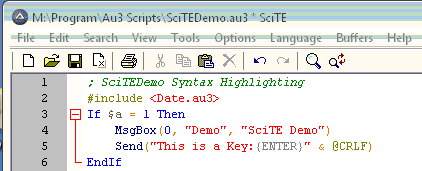
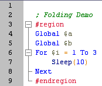
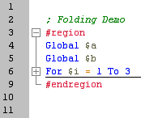
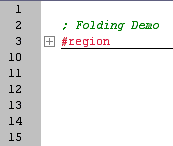

The Origins of SciTE4AutoIt3
A long time ago AutoIt forum members started looking at various editors to see which one was the most useful for coding with AutoIt3. We found SciTE and saw its potential so I wrote a customized Lexer for the syntax highlighting and syntax folding
and created a special installer - SciTE4AutoIt3. The "Package" has grown into what it is today - including many integrated utilities written by other members of the AutoIt3 community.
Quote from the SciTE developer, Neil Hodgson: "SciTE is a Scintilla based Text Editor. Originally built to demonstrate Scintilla, it has grown to be a generally useful editor with facilities for building and running programs".
SciTE4AutoIt3 contains SciTE, wrapped into a single installer with all needed configuration settings and lots of utility programs like
AutoIt3Wrapper,
SciTEConfig,
Tidy,
Au3Stripper, etc to enhance SciTE for use with AutoIt3.
Read on for all the details... enjoy. :)
Jos van der Zande
Some of the additional functionality in SciTE4AutoIt3
· Customized Syntax colouring
· AutoComplete AutoIt commands automatically (options are suggested in a dropdown box while typing - just press ENTER or TAB to AutoComplete)
· AutoComplete variable and function names already used within the script with Ctrl-Enter
· CallTips (Show a tooltip with expected parameters in the function being used)
· Code folding for easy code viewing
· Auto-indentation while typing
· Specially written LUA scripts to enhance editing which include:
· Open the AutoIt Help file on the keyword under the cursor
· Bring up a list of AutoIt functions - double-click or click and press ENTER to paste the selected function into your script
· Run, compile and/or syntaxcheck an AutoIt script from within the editor
· Packaged with several other utilities to help you code:
· Autoit3Wrapper - change compiler options, the icons to be used, file compression options, property details and add additional resources to the compiled file plus SVN (Versioning) options.
· Au3Stripper - make your script more difficult to read as well as helping it run faster by shortening the code
· Tidy - neatly indent the script and standardize spellings
· SciTEConfig - manage many SciTE setting such as colours, fonts and menu selections
· SciTE Jump - move quickly between functions and regions within the script
· AU3Check - test your script for syntax and other problems
· CodeWizard - easily create MsgBox, InputBox etc
· Koda - visual GUI designer
· User Abbreviation manager - add your own abbreviations to SciTE's own list
· Use CallTip manager - add your own functions to the AutoComplete and CallTip lists
· Multiple keyboard shortcuts
Some Screenshots of SciTE
Syntax colouring:

Code folding:
  
Changing any settings for SciTE
The
SciTEConfig app (just press Ctrl-1) makes it easy for you to update many of the SciTE options without having to manually amend the files.
If you do want to make manual changes to SciTE settings, it is best to do this in the "User Option File" because the installation of a new version will override the settings of the SciteGlobal.properties and au3.properties files. See the
SciTE Documentation for all possible settings and
User Options File for more details.
All of these Configuration files can be found under the <Options> menu.
General information
Many thanks to:
Jonathan Bennett for AutoIt.
Neil Hodgson for SciTE/Scintilla.
Jason (Valik) Boggs, for supplying LUA functions and lots of ideas and feedback.
Michael (MHz) Heath updating the Abbrev.properties and testing/input.
Michał Lipok (mLipok) for refreshing the Abbrev.properties and Helpfile Abbrev page.
Giuseppe (gcriaco) Criaco and Gary (gafrost) Frost for CodeWizard.
Lookfar and LazyCat for the Koda formdesigner.
wraithdu for updating the Resource Update Functions allowing non-standard Resource updates in Autoit3Wrapper.
guinness/Ashalshaikh/Melba23 for SciTE Jump.
Melba23 for User Abbreviation, CallTip Managers and reformatting to this version of the helpfile!
All other forum members supplying their ideas/contribution/input.